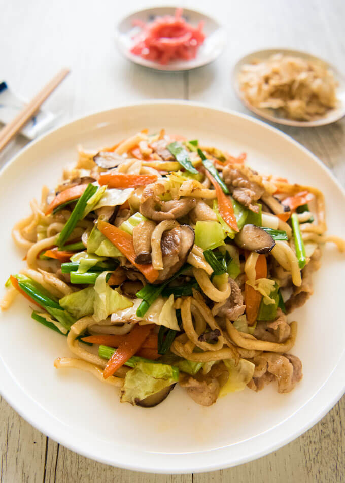

Yakiudon

Description
Yaki Udon is a Japanese udon noodles stir-fried with your choice of protein and vegetables.
Your protein can be thinly sliced meat or any seafood for stir frying. Yaki Udon is quick
and easy recipe yet so delicious.
Ingredients
- One pack of cooked Udon noodles
- Cabbage cut into large bit-size pieces
- Thinly sliced carrots
- Shallots/scallions - cut into 5cm/2" long pieces
- Thinly slices shiitake mushrooms
- Thinly sliced pork
Flavoring sauce
- 2.5 Tbsp Soy Sauce
- 2.5 Tbsp Sake
- 1 Tsp Mirin
- 1 Tbsp Sesame Oil
Cooking Instructions
- Mix the flavoring sauce
- Stir-fry the pork slices
- Add the vegetables and stir-fry
- Add the udon noodles and stir-fry
- Pour in the sauce and mix